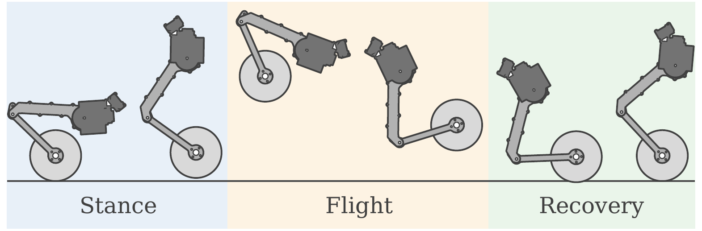
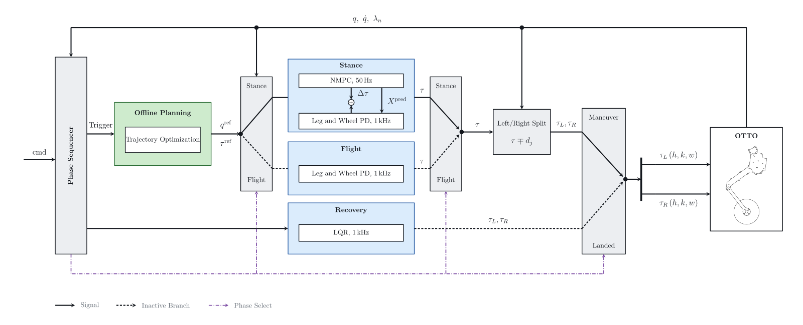

About the project
OTTO is a wheeled bipedal robot built at FIBO. It rolls on two wheels like a balancing robot and uses its two-joint legs to change height and leave the ground. This project makes it perform a full forward somersault, where it crouches, pushes off, rotates a full turn in the air, lands on its wheels, and recovers to a stable stance.
Wheeled bipeds combine the efficiency of wheels on flat ground with the reach of legs on rough terrain. Legs also allow airborne motions that clear obstacles taller than the wheels, and the forward somersault is the most demanding of these.
The hard part is that the robot is underactuated at the wheel contact, so body pitch can only come through the ground reaction. Once it leaves the ground its angular momentum is fixed, which means everything about the landing is decided at push-off.
Earlier somersault controllers either hand-design the take-off and landing states with fixed phase durations, or impose a full terminal state without reporting the touchdown rate it demands. Neither asks what landing the recovery controller can actually accept. This project plans the whole maneuver around that question.
Process
Model the robot
The full-order dynamics of the four leg joints and two wheels are built with Pinocchio, so the planner and the controller share one model.
Plan the whole maneuver
Stance and flight are solved as one Hermite-Simpson collocation problem in CasADi. Both phase durations are left free, and a four-step continuation converges in about 2 minutes.
Define a landing the robot can catch
Instead of fixing an exact touchdown state, the plan bounds the touchdown pitch rate and centers the landing pose on the recovery controller's own equilibrium.
Track it with NMPC
During stance, an acados NMPC re-solves the reference every cycle. Its torque correction is limited to a margin the plan reserves, so tracking never fights the actuator limits.
Stress-test in simulation
Mass error, IMU noise, lower ground and extra payload show how much the plan and the tracker can each absorb. The same controllers run in MuJoCo and on the robot through ros2_control.
Results
- The robot rotates 347° to 349° and touches down with a pitch rate between −0.43 and +0.62 rad/s.
- The maneuver still completes with ±40% torso-mass error, IMU noise up to its full measured covariance, or ground 10 cm lower than planned.
- At +60% payload the unchanged plan fails, while the re-solved plan lands within 4.5°.
Figures


Where it stands
Balancing, height control, roll levelling and wheel alignment already run on the real robot. The somersault has run only in simulation so far, and hardware trials are the next step.
System
| Robot | OTTO platform with 4 leg joints and 2 wheels |
|---|---|
| Leg actuators | MyActuator RMD, 35 N·m peak, CAN |
| Wheel drives | ODrive, 14 N·m peak, CAN |
| Sensors | WitMotion HWT906 (roll, pitch), HWT101CT (yaw) |
| Software | ROS 2 Jazzy, MuJoCo, ros2_control, CasADi, Pinocchio, acados |
| Paper | Submitted to IEEE ICRA 2027 |
| Advisor | Dr. Kitti Thamrongaphichartkul |